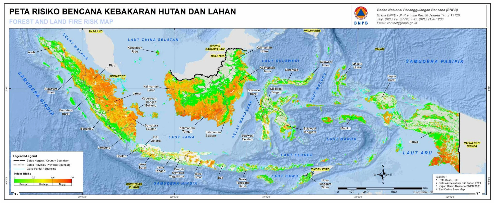
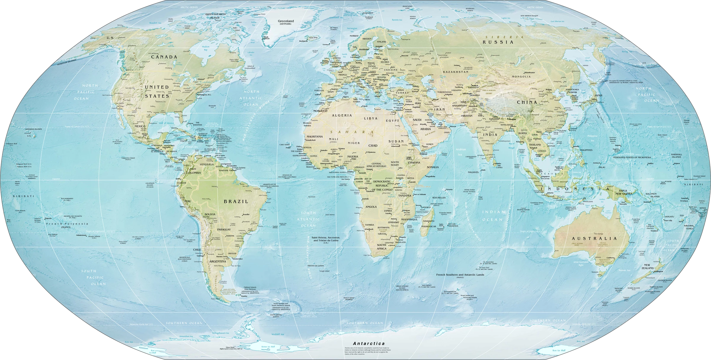
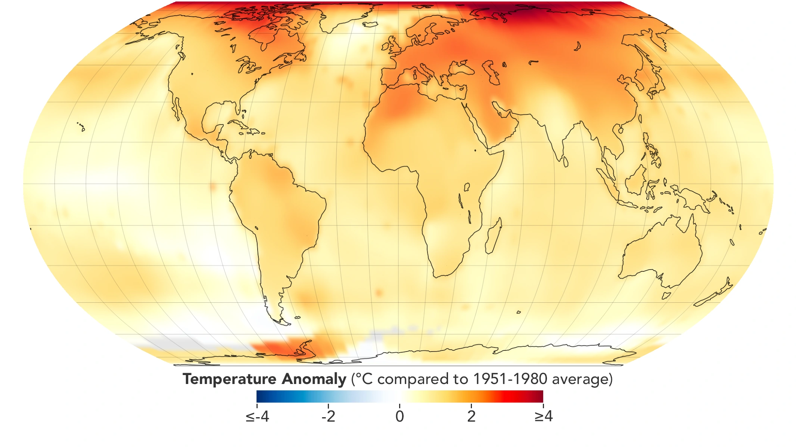

Peta Rupabumi Indonesia (RBI)
Badan Informasi Geospasial (BIG)
- Peta umum resmi skala 1:25.000 dan 1:50.000: kontur, sungai, jalan, permukiman, batas, dan toponimi.
- Cocok untuk latihan P4, P6, P7, P9, P13, P14, P15.
Halaman ini berisi daftar sumber peta yang dapat kamu pakai untuk mengerjakan latihan dan tugas. Pilih peta sendiri dari sumber berikut, lalu analisis dengan tabel yang ada di setiap pertemuan.
Tuliskan identitas peta di bagian atas lembar kerja dengan format berikut.
Contoh: Peta Risiko Bencana Kebakaran Hutan dan Lahan. (2023). BNPB, Buku Peta Risiko Bencana Indonesia. https://inarisk.bnpb.go.id. Diakses 20 November 2026.
Badan Informasi Geospasial (BIG)

Badan Nasional Penanggulangan Bencana (BNPB)

Badan Meteorologi, Klimatologi, dan Geofisika (BMKG)

Badan Geologi, Kementerian ESDM

Central Intelligence Agency (domain publik)

Wikimedia Commons

NASA Earth Observatory

NOAA Coral Reef Watch

U.S. Geological Survey (USGS)

swisstopo

Introduction to Cartography (OpenALG)
SINAR, Badan Informasi Geospasial
MAGMA Indonesia, Badan Geologi
Badan Pusat Statistik (BPS)
SIGAP, Kementerian Lingkungan Hidup dan Kehutanan
Bhumi, Kementerian ATR/BPN
Esri Living Atlas
OpenStreetMap
Library of Congress Geography and Map Division
David Rumsey Map Collection
Gambar contoh diambil dari sumber masing-masing; keterangan lengkap setiap gambar ada di halaman pertemuan yang memuatnya. Tautan diperiksa pada November 2026.